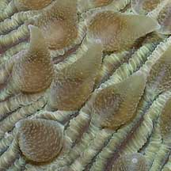
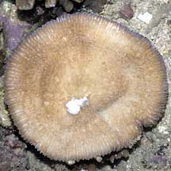

|
|
| hard corals text index | photo index |
| Phylum Cnidaria > Class Anthozoa > Subclass Zoantharia/Hexacorallia > Order Scleractinia > Family Fungiidae |
| Fungia
mushroom corals Fungia sp.* Family Fungiidae updated Nov 2019 Where seen? These mushroom shaped corals are sometimes seen on some of our Southern shores, lying unattached on shallow sandy or rubbly areas near living reefs. Features: Circular Fungia species are more commonly seen, while some may be elongtated or oval. Species are only positively identified by the lines and teeth structures on the upper side, as well as the kind of surface on the underside. These features are often hidden by tissues in living specimens and are difficult to determine in the field. On this website, they are grouped by large external features for convenience of display. More about Fungia species: A fungia mushroom coral is free-living as an adult (it is not attached to the surface). It can move, even climb up slopes! It does this by inflating and deflating its tissues. It can also right itself if accidentally overturned, e.g., by fish looking for things hiding under it. And rid itself of sediments as well as "unbury" itself from sand. An unusual property of fungia mushroom corals is the inclusion of large amounts of chitin in the skeleton. Chitin is the substance that insect exoskeletons are made of. The only other group of hard corals with this property are Pocillopora corals. Sometimes mistaken for the Sunflower mushroom hard coral (Heliofungia actiniformis) especially when Heliofungia has its tentacles retracted. Heliofungia has large, rounded teeth on the skeleton walls and very long cylindrical tentacles. Status and threats: Some of Fungia species recorded for Singapore are listed as threatened on the IUCN global listing. Like other creatures of the intertidal zone, all mushroom corals are affected by human activities such as reclamation and pollution. Trampling by careless visitors, and over-collection by hobbyists also have an impact on local populations. |
 Raffles Lighthouse, Jul 06 |
 Short tentacles |
 Underside. |
| Some Fungia mushroom corals on Singapore shores |


*Species are difficult to positively identify without close examination.
On this website, they are grouped by external features for convenience of display.
| Fungia
species recorded for Singapore from Danwei Huang, Karenne P. P. Tun, L. M Chou and Peter A. Todd. 30 Dec 2009. An inventory of zooxanthellate sclerectinian corals in Singapore including 33 new records. **the species found on many shores in Danwei's paper. *Groups based on in Veron, Jen. 2000. Corals of the World. in red are those listed as threatened on the IUCN global list.
|
|
Links
References
|